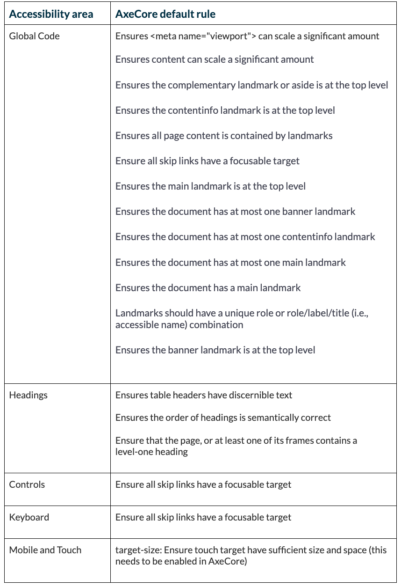

So you’re advocating for accessibility, but flying solo on a redesign project. Timelines are tight, but you also want to keep your project’s accessibility standards high.
While there are many accessibility tools and guides available, you rely on A11Y’s Project Checklist. It’s a great designer-friendly tool to make sure more usability-focused accessibility issues are addressed.
And when you’re redesigning a website, you’re rolling out larger features (or editing existing ones). These could have potentially large impacts on accessibility.
But with limited bandwidth and time, you need to be intentional on where you place your effort.
Is there a way to help raise your project’s accessibility standards so the right issues are prioritized, and save (some) time while you execute on other critical deliverables?
Include A11Y Project checklist items in automated testing
A helpful first step is to automate parts of A11Y Project Checklist by customizing an automated accessibility testing tool like axe-core. This way, you’ve enhanced the standards by which your team flags accessibility issues as part of the automated testing process.
This approach is particularly useful for small redesign teams managing many priorities (ideally, you’d run axe-core tests for all code changes).
Axe-core defines some issues as ‘minor’ accessibility impact (but some of these are pretty ‘major’)
On our project, we were already using an automated accessibility checker called axe-core. In its default state, the tool is a solid starting point.
It is able to flag many different types of accessibility issues (also called axe-core rules). It then designates an impact score to each rule as either:
- Critical
- Serious
- Medium
- Minor
But some of what axe-core default designates as ‘minor’ or ‘medium’ are actually pretty ‘major’ for usability and inclusive design. These ‘major’ issues are what’s included in A11Y’s Project Checklist.
For instance, axe-core default could be enhanced to align better with A11Y’s Project rules on issues related to:
- mobile and touch (our project’s site had ~25% mobile visitors)
- structured content (this is important for government websites that tend to have long-form content)
By mapping the issues in axe-core default to A11Y Project’s checklist, we identified a full list of axe-core rules that we could either:
- Update to ‘serious’ or ‘critical’
- Enable in axe-core default
Making sure more usability-focused accessibility issues are prioritized
Aligning axe-core with the A11Y Project checklist not only saves time, but helps prioritize and increase your project’s accessibility standards. You can customize axe-core so it assigns a higher impact category (like ‘serious’ or ‘critical’). Otherwise, they’ll get stuck in the backlog and be handled much later (at best) or not at all (at worst).
When some of A11Y’s rules are represented in axe-core, we can:
- Reduce ambiguity regarding the seriousness of accessibility issues
- Elevate accessibility standards beyond the out-of-the-box configuration
- Include inclusive design principles into our process that are (relatively) light-weight
- Help focus on issues that require further manual testing
How to modify axe-core to include custom items
You can work with your dev team to customize axe-core so it expands its definition of what’s ‘critical’ — like including those more usability focused accessibility issues in A11Y’s Project checklist.
Here’s a list of axe-core rules that can either be upgraded to ‘critical’ or need to be enabled altogether (like what’s in Mobile and Touch).

Manual testing is still essential
Automation tools alone are not enough. For instance, it will tell you when an alt-text is missing, but it doesn’t tell you what alt-text (in plain language) should be. Or it will tell you the link is not underlined, but it doesn’t assess the quality of the text in the link.
You can incorporate manual testing during your design and/or QA process. For instance:
- Can a person navigating with a keyboard or screen reader move around the page in a predictable way?
- Are form input errors displayed as expected?
- Are links communicated as links? For instance, are they styled so that users will understand them to be links (underlines or boldface)? Or do they rely on a text color change alone?
- Are there any errors in your HTML that will make it hard for assistive devices? Assistive devices will have a difficult time if there are errors in your HTML (like a label missing from a form field, for instance).
- You can use an HTML validation tool to confirm there are no errors in your HTML. Tip: run this before your axe-core testing to produce a cleaner report.
Accessibility is a long game
Manual accessibility testing, and including a diversity of participants in usability testing throughout your process is essential. But automating parts of A11Y’s checklist can help you detect and prioritize more issues. This leaves more time for the important human work for accessibility testing.
It’s also a practical first step for the dedicated and strapped designer running solo on a large project.